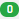

Clients
Un client rattaché à un PSMF est défini par :
- Un nom – Obligatoire,
SYS_CLIENT_NAME - Un logo – Facultatif,
SYS_CLIENT_LOGO - Une adresse – Obligatoire,
SYS_CLIENT_ADRESS
1. Liste des clients
 ajoutez un client.
ajoutez un client.-  nombre de documents psmf crées pour ce client.
 mode d'emploi .
mode d'emploi . modifiez un client.
modifiez un client.  l'historique des modifications de ce client.
l'historique des modifications de ce client.